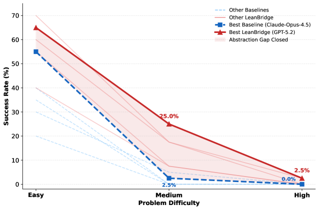

Introduces LeanCat, 100 fully formalized category-theory theorem tasks in Lean 4 used to benchmark LLM provers.
Abstract
While large language models (LLMs) have demonstrated impressive capabilities in formal theorem proving, current benchmarks fail to adequately measure library-grounded abstraction – the ability to reason with high-level interfaces and reusable structures central to modern mathematics and software engineering. We introduce LeanCat, a challenging benchmark comprising 100 fully formalized category-theory tasks in Lean. Unlike algebra or arithmetic, category theory serves as a rigorous stress test for structural, interface-level reasoning. Our evaluation reveals a severe abstraction gap: the best state-of-the-art model solves only 12.0% of tasks at pass@4, with performance collapsing from 55.0% on Easy tasks to 0.0% on High-difficulty tasks, highlighting a failure in compositional generalization. To overcome this, we evaluate LeanBridge, a retrieval-augmented agent that employs a retrieve-generate-verify loop. LeanBridge achieves a peak success rate of 24.0% – doubling the performance of the best static baseline. These results empirically demonstrate that iterative refinement and dynamic library retrieval are not merely optimizations but strict necessities for neuro-symbolic reasoning in abstract domains. LeanCat offers a compact, reusable testbed for tracking progress toward reliable, research-level formalization.
Problem
Current formal theorem proving benchmarks fail to measure library-grounded abstraction, the ability to reason with high-level interfaces and reusable structures central to modern mathematics. Existing models collapse on medium and high difficulty tasks requiring deep library understanding.
Approach
LeanCat is a benchmark of 100 fully formalized category-theory tasks in Lean 4, organized by difficulty (Easy, Medium, High) and covering both abstract and concrete categorical reasoning. The authors also introduce LeanBridge, an agentic approach that uses iterative refinement with natural language and formal statement guidance to close the abstraction gap. Tasks are drawn from standard category theory textbooks.

Figure 1: Closing the Abstraction Gap . Performance comparison of standard baselines (dashed lines) vs. our agentic approach, LeanBridge (solid lines), across difficulty levels. Bold lines highlight the best-performing models (Claude-Opus-4.5 for pass@4 baseline, GPT-5.2 for LeanBridge with NL+Statement input), while faint lines represent other models. Note the sharp performance collapse of baseli
Results
Standard baselines achieve at best 12% overall (Claude-Opus-4.5 pass@4), revealing a severe abstraction gap. LeanBridge with GPT-5.2 reaches 24% overall, with the biggest gains on Medium tasks (from 5% to 25%). Specialized provers like DeepSeek-Prover-V2-671B achieve only 9% overall. No model solves any High-difficulty task beyond 2.5%.
Model
Easy
Medium
High
Overall
Claude-Opus-4.5 (baseline)
40/55%
0.6/2.5%
0/0%
8.3/12%
GPT-5.2 (LeanBridge)
60/65%
5/25%
0/2.5%
14/24%
DeepSeek-Prover-V2-671B
45%
0%
0%
9%
LeanCat baseline vs LeanBridge performance (pass@1 / pass@4)